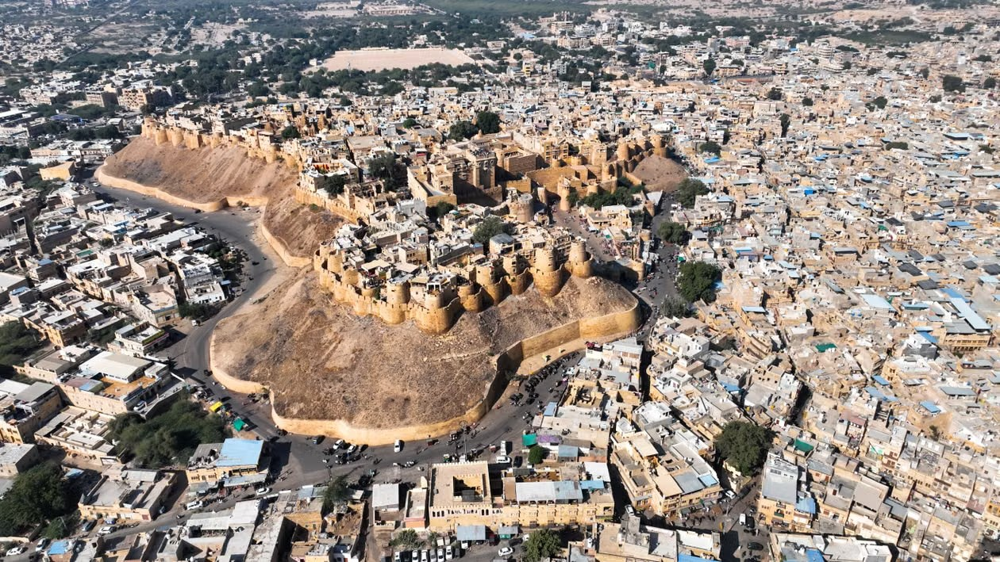
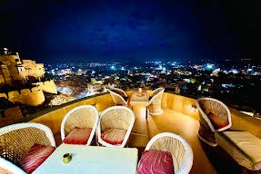
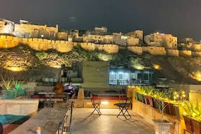
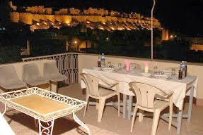
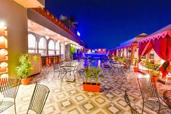
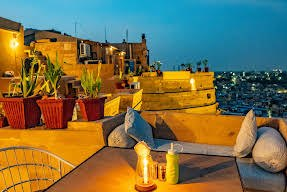

We loved everything. Hotel Victoria was the most pleasant hotel experience we had in our 3 weeks in India. First it did all the important things right: clean room, clean bathroom, spacious rooftop, great food that's at a fair price. But it''s all the other little things that made it special: super comfy bed and pillows, a shower that doesnt need preheating and.doesnt run out of hot water after 5 mins, electricity that runs even when you're out of the room (practical to charge your devices when you're out), breakfast is not limited to 2 things (you have indian and european options, you can ask for seconds and thirds), tea/coffee is real good (hot and iced) and unlimited and free throughout the day, the cook and staff are super friendly (special thanks to Navin the manager), and lastly, they never asked once for a review. Which is why we wanted to write this and encourage you to definitely stay there. You won't want to leave (we didn't) !
The best place to stay in the only living fort of the world
The Golden City of India, Jaisalmer was founded in 1156. It is known for its magnificent sandstone palaces, ornate Jain temple, the finely wrought manors of the palace and the Hotel Victoria. Hotel Victoria is said to be the best place to stay in the only live fort of the world.
It comprises two converted town houses built right into the fort walls, with rooms decorated in vivid shades of crimson, lime and orange. Its three terraces command the finest Jaisalmer sunset views. Hotel Victoria has a simple charm that suits its remote, romantic Arabian Nights setting in the desert town of Jaisalmer.
Its glorious roof terrace, covered with Indian floor cushions, offers a spectacular view of the town, fort and desert beyond. If you are looking for a delightful and affordable vacation, the picturesque city of Jaisalmer is waiting for you.



A heart-of-the-city stay with fort-wall charm
Historic Building
A detached, historically built hotel whose atrium adds to the classic style of the interior.
Warm Colours
An unusual combination of yellow, red and pink creates a warm and cosy atmosphere.
Spacious Rooms
Comfortable, light-filled rooms, each designed in its own colour and personality.
Central Location
In the heart of Jaisalmer, surrounded by small shops selling traditional Rajasthani materials.
Our hotel is a business class hotel, conveniently located close to the heart of the city and the main tourist attractions of Jaisalmer. It also offers a convenient conference area and modern equipment suitable for all types of events.
Dine and unwind above the Golden City
Three terraces command the finest Jaisalmer sunset views. Settle into cushioned seating, watch the fort glow gold, then stay for dinner under the stars.







"Step through a window opening from the honeymoon suite onto an alluring cushioned balcony, and you'll feel the world is yours for the asking. If you need some air, climb the stairs to the roof, look west, and if the timing is right, you can bet there's a truly magnificent sunset on the cards."Susan Derby, Lonely Planet author
Loved by guests from around the world
A selection of reviews from Google and Tripadvisor, quoted as the guests wrote them.
I felt at home in this hotel. Navin was very welcoming! They picked us up by the fort gate and gave us a complimentary room upgrade! We had the best breakfast so far and the views are excellent. Choose this hotel for the best hotel in the fort!
33 years travelling in India and this must be the cleanest hotel I’ve stayed in. Beautiful heritage property, amazing staff, fabulous location and the best thali in India (Victoria special thali). Thanks Navin and team!
One of the best Location inside the Fort. Walking distance to all major attractions. Clean and well maintained Property. The staff is amazingly friendly and welcoming. The rooftop restaurant had a breathtaking view of the Sunset. The food was amazing with a great variety.
Great hotel inside the fort. Clean, cozy rooms. There is warm water. Beautiful view. Delicious food. Friendly staff. I recommend 100%
The stay here was wonderful. The hotel is located within the fort and has a great view of the city. The host, Navin, was very helpful and always available whenever we needed anything. Also, the food here is delicious! Highly recommend!
The hotel is situated inside the fort, which is a prime location. The room felt like a piece of history. The view from the rooftop is excellent. And the hospitality provided by the staff is great as well!
Very nice hotel. The location is fantastic since it is situated inside the fort. The service and behaviour of the staffs is fantastic. The food served here is like home made food. They make fresh food everytime you order. Overall a great experience and i strongly recommend everyone this place.
We visited Hotel Victoria and had a stunning time. The food was excellent as well as the service. All of our needs were taken care of in a timely manner. The view was beautiful from the terrace as well as from the rooms were phenomenal. Definitely recommend!
The rooms are inside the fort and they are beautiful and cosy. The view from the rooftop is spectacular. They arranged a singer and bonfire for us which made our evening magical.
This place is all about age old Haveli feels with extremely courteous staff and heritage vibes. Very good homely food and generous help for their guests. Highly recommended place to stay in the fort area.
The rustic regal vibe, beautiful rooms and aesthetically pleasing decor. Food is also a must-try from their rooftop restaurant from which you can see the Golden City. Very cooperative staff.
The view from the top of the Hotel was spectacular. The staff were also highly welcoming and courteous. I highly recommend Hotel Victoria if anyone wants to stay inside the Jaisalmer fort.
We stayed here with Family. Best in Service, Best Home cooked Like Food & Specailly Best View You will get from the Top. U can view whole of Jaisalmer from here. Loved the Hospitality. Thank You Team Victoria ❤️❤️
Great place!! The staff is very kind and helpful. You can enjoy the best food in town (try the yogurt with fruits!) while watching the sunset. We really recommend :)
This place is gem for those who want to experience the fort living with traditional Rajasthani heritage. The rooms are clean and comfortable. Food is good and the staff- polite and prompt. Specially to mention -Naveen Bhaiya, very polite and helpful manager. Overall, we had an amazing stay.
Awesome Hospitality by Pankaj and his team. Balcony room and in-house kitchen is a must try for once in a time experience of actually living in a fort
Very nice hotel and staff. Rooms are very nice and cosy. The view from the roof top is amazing. We can see the sunrise and sunset from the roof top.
We stayed here for a couple of days and the rooms and facilities were extremely clean. The view from the jharokha style rooms was also splendid. Would recommend 100% for the complete experience. The staff also very helpful.and always available
Excellent stay, food. recommend to all who visit to jaisalmer as every place is nearby walking distance- jaisalmer fort, laxminathji temple, market road, city view point..great hospitality & great food specially kachori in the breakfast😍
Hotel is situated in Jaisalmer Fort at a prime location giving viewers pleasure to enjoy the view of entire Jaisalmer with Sunset.. The staff is helpful and genuine. Value for money. Must visit for people visiting Jaisalmer.
If you are looking to stay in fort area in Jaisalmer, this is the hotel you are looking for .. excellent view from terrace, nice behavior of hotel staff and above it very nice food. They serve food without onion but it's very delicious.
Hotel in the fort gives a royal experience. Comfortable rooms with adequate amenities, good food, personalised and courteous service. Birds eye view of the city from the balcony.
The most interesting hotel I've stayed at. The place is run by the proprietor and his family and is located INSIDE Jaisalmer Fort. You need a tuk-tuk to get up to it but once there, you're transported back in time. Rooms are nice and the rooftop deck is a great place to relax.
Had a wonderful experience at Victoria. I had an amazing view of the city from my room and from the restaurant. Appreciate the effort put in by staff at Victoria to make my stay comfortable.
Very good location within Jaisalmer fort walls, cool sunset view. Friendly staff make this stay pleasant
Amazing location and very Caring staff. If you are planning to stay on fort I will recommend this hotel.
The rooms very aesthetic , and the view from it was stunning. The staff were very responsible and made us feel at home. The food tasted excellent. Overall, the service and stay were quite memorable.
Stay inside the Golden Fort
Tell us your dates and we will confirm your room at Hotel Victoria, on the fort in Kund Para, Jaisalmer.
Book a Room Call +91 93747 57770